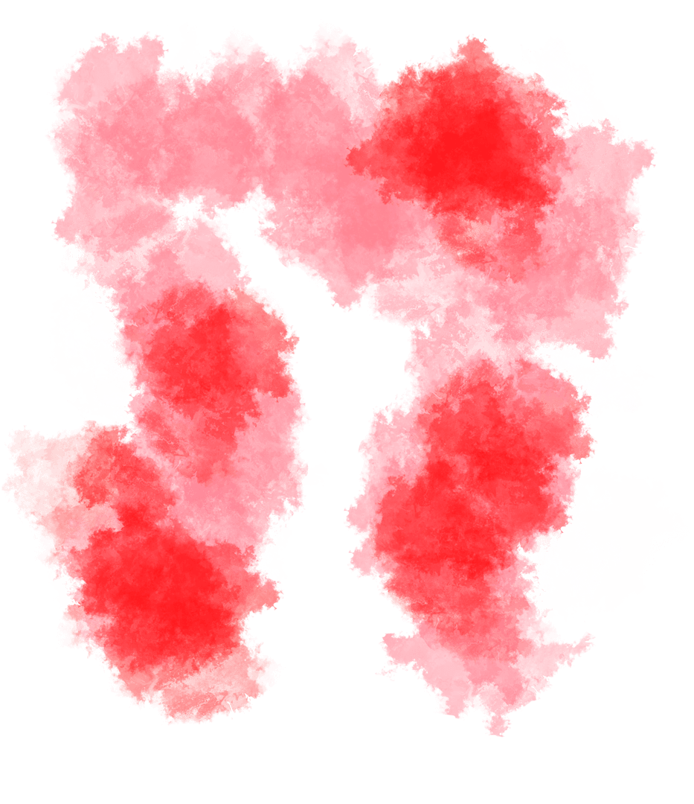

MINISTÉRIO DA CULTURA APRESENTA
CONHEÇA O ESPETÁCULO
- 

UM MUSICAL
Gabriela chega a Ilhéus em 1925, fugida de uma terrível seca no agreste. O Sírio Nacib, dono do bar Vesúvio, a encontra no “mercado dos escravos” e leva para trabalhar em seu estabelecimento. De início, ele não repara na beleza da moça, escondida sob os trapos e a poeira do caminho, mas logo ele se rende aos seus encantos, assim como boa parte dos vizinhos.
Por conta da comida de Gabriela, o Vesúvio passa a receber cada vez mais clientes, todos seduzidos pela presença inebriante da cozinheira. Após se casar com Nacib, Gabriela tem conflitos com as obrigações conjugais que vão de encontro ao seu espírito livre.
Temperada com muita sensualidade, a narrativa romântica de Jorge Amado mostra um rico panorama dos costumes da época e das transformações pelas quais a Bahia da década de 20 passava. Com a abertura do porto aos grandes navios, são inevitáveis o declínio dos coronéis, como Ramiro Bastos, e a ascensão de um novo perfil de empresário, personificado por Mundinho Falcão. Gabriela representa ainda todas as rupturas trazidas por esta nova configurações da sociedade.
O TEATRO
O Teatro Cetip está localizado no prédio do Instituto Tomie Othake, entre as avenidas Faria Lima e Pedroso de Moraes, em São Paulo no bairro de Pinheiros.
Rua Coropé, 88 • Pinheiros, São Paulo • 05426-010
Veja no mapa